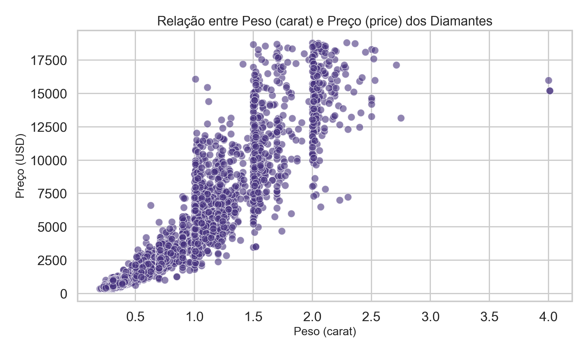
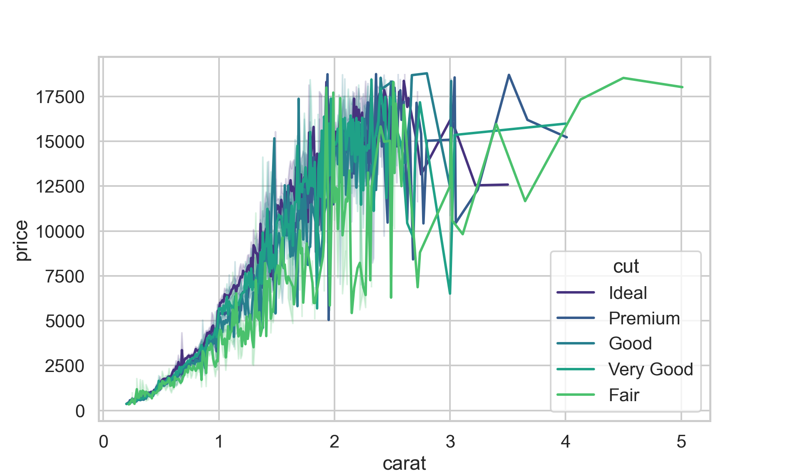

Importe o conjunto de dados diamonds, cujo arquivo está disponível no website da disciplina.
Crie uma visualização de dados que descreva a associação existente entre as variáveis peso (carat) e preço (price). Que ações você tomou para garantir que você produziu um gráfico de boa qualidade? Escreva um parágrafo comunicando os seus achados.
# Importação das bibliotecas necessáriasimport pandas as pdimport matplotlib.pyplot as pltimport seaborn as sns# Leitura do conjunto de dadosdiamonds = pd.read_csv("diamonds.csv.gz")# Exibe as primeiras linhas para conferênciaprint(diamonds.head())
carat cut color clarity depth table price x y z
0 0.23 Ideal E SI2 61.5 55.0 326 3.95 3.98 2.43
1 0.21 Premium E SI1 59.8 61.0 326 3.89 3.84 2.31
2 0.23 Good E VS1 56.9 65.0 327 4.05 4.07 2.31
3 0.29 Premium I VS2 62.4 58.0 334 4.20 4.23 2.63
4 0.31 Good J SI2 63.3 58.0 335 4.34 4.35 2.75
# Configurações de estilo para um gráfico de boa qualidadesns.set(style="whitegrid", context="talk", palette="viridis")# Criação do gráfico de dispersão (scatterplot)plt.figure(figsize=(10, 6))sns.scatterplot( data=diamonds.sample(5000, random_state=42), # amostragem para evitar sobreposição excessiva x="carat", y="price", alpha=0.6)# Títulos e rótulos clarosplt.title("Relação entre Peso (carat) e Preço (price) dos Diamantes", fontsize=16)plt.xlabel("Peso (carat)", fontsize=14)plt.ylabel("Preço (USD)", fontsize=14)plt.tight_layout()# Exibição do gráficoplt.show()

Na produção do gráfico, foi utilizado uma certa transparência para entender onde há sobreposição de dados. Pode-se observar que há uma correlação positiva entre peso e preço, ou seja, quanto mais pesado mais caro. Ademais, diamantes com mais de 2 quilates apresentam crescimento de preço acelerado.
# Importação das bibliotecas necessáriasimport pandas as pdimport matplotlib.pyplot as pltimport seaborn as sns# Leitura do conjunto de dadosdiamonds = pd.read_csv("diamonds.csv.gz")# Configurações de estilo para melhor visualizaçãosns.set(style="whitegrid", context="talk", palette="viridis")# Gráfico: Relação entre carat e price, diferenciando por tipo de corte (cut)plt.figure(figsize=(10, 6))sns.scatterplot( data=diamonds.sample(5000, random_state=42), x="carat", y="price", hue="cut", alpha=0.8)# Ajustes visuaisplt.title("Relação entre Peso (carat) e Preço (price) por Tipo de Corte (cut)", fontsize=16)plt.xlabel("Peso (carat)", fontsize=14)plt.ylabel("Preço (USD)", fontsize=14)plt.legend(title="Corte", bbox_to_anchor=(1.05, 1), loc='upper left')plt.tight_layout()plt.show()
# Análise descritiva complementar: tendência média por corteplt.figure(figsize=(10, 6))sns.lineplot( data=diamonds, x="carat", y="price", hue="cut", estimator="mean")

A relação positiva entre peso e preço se mantém presente em todos os tipos de corte, porém os diamantes com cortes de maior qualidade, Ideal e Premium, apresentam preços mais altos com pesos parecidos, enuquanto os cortes inferioresm como Fair e Good, têm preços mais baixos, concluindo que o tipo de corte influencia o valor de mercado dos diamantes.
# Criação de uma amostra para evitar sobreposiçãodiamonds_sample = diamonds.sample(5000, random_state=42)# Definição da ordem das categoriascut_order = ['Fair', 'Good', 'Very Good', 'Premium', 'Ideal']clarity_order = ['I1', 'SI2', 'SI1', 'VS2', 'VS1', 'VVS2', 'VVS1', 'IF']# Gráfico 1 - Corte (Seaborn)plt.figure(figsize=(10, 6))sns.scatterplot( data=diamonds_sample, x='carat', y='price', hue='cut', hue_order=cut_order, palette='husl', alpha=0.7, s=60)plt.title('Preço vs Peso por Qualidade de Corte', fontsize=14, weight='bold')plt.xlabel('Peso (carat)', fontsize=12)plt.ylabel('Preço (USD)', fontsize=12)plt.legend(title='Corte')plt.grid(True, alpha=0.3)plt.tight_layout()plt.show()
# Gráfico 2 - Cor (Seaborn)plt.figure(figsize=(10, 6))sns.scatterplot( data=diamonds_sample, x='carat', y='price', hue='color', palette='viridis', alpha=0.7, s=60)plt.title('Preço vs Peso por Cor do Diamante', fontsize=14, weight='bold')plt.xlabel('Peso (carat)', fontsize=12)plt.ylabel('Preço (USD)', fontsize=12)plt.legend(title='Cor')plt.grid(True, alpha=0.3)plt.tight_layout()plt.show()
# Gráfico 3 - Clareza (Seaborn)plt.figure(figsize=(10, 6))sns.scatterplot( data=diamonds_sample, x='carat', y='price', hue='clarity', hue_order=clarity_order, palette='plasma', alpha=0.7, s=60)plt.title('Preço vs Peso por Clareza do Diamante', fontsize=14, weight='bold')plt.xlabel('Peso (carat)', fontsize=12)plt.ylabel('Preço (USD)', fontsize=12)plt.legend(title='Clareza', fontsize=9)plt.grid(True, alpha=0.3)plt.tight_layout()plt.show()
Pode-se observar que há uma forte relação crescente entre peso e preço, entretanto esse ritmo de crescimento viaria de acordo com o corte, cor e clareza. Cortes de qualidade superior tendem a ter preços mais altos. Entretanto, quando analisamos a cor dos diamantes, essa tendência ainda continua, porém so preços dos diamantes variam com as cores, tendo uma boa quantidade da “pior” cor (J) nos diamantes mais caros e com maior peso. Sobre as dificuldades, é intensamente difícil condensar esses três gráficos num só, pois os dados se sobrepõem e ainda ficam com uma análise com pouca clareza. Foi feito uma amostragem para conseguir lidar com esses dados.